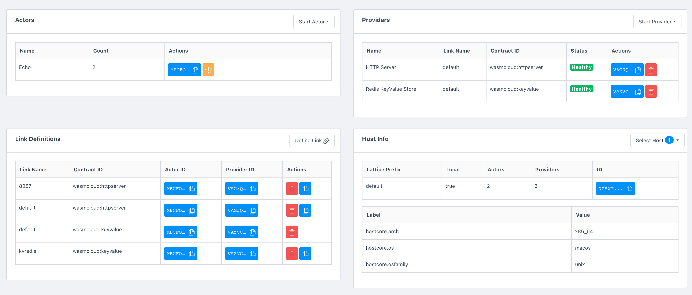
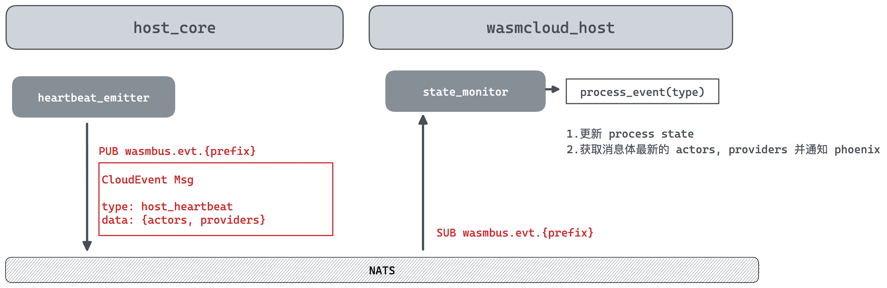

host_core 定时 pub
每隔 30 秒，host_core/lib/host_core/heartbeat_emitter.ex 进程会 pub 消息到 wasmbus.evt.{lattice_prefix},其消息内容是符合 CloudEvent 规范的消息体，如下：
1 | %{ |
抓取 nats 的调试日志，看到实际的结构体为
1 | { |
在添加了 actor provider 和 link 之后

1 | { |
代码实现细节
启动 heartbeat emitter 进程
在 host_core/lib/host_core.ex start 的时候，启动了相关的进程
1 | Supervisor.child_spec( |
host_core/lib/host_core/heartbeat_emitter.ex
1 | @impl true |
进程处理 :publish_heartbeat
1 | @impl true |
实际上执行的函数如下
1 | defp publish_heartbeat(state) do |
sub event
wasmcloud_host/lib/wasmcloud_host/lattice/state_monitor.ex
1 | def init(_opts) do |
当 sub 到消息时，会 match 对应的 handle_info 函数进行处理
1 | @impl true |
process event 根据 lattice event 的 type 来进行处理，目前已知的 event 类型有（作为 cloudEvent 格式的 type 字段）
com.wasmcloud.lattice.actor_startedcom.wasmcloud.lattice.actor_stoppedcom.wasmcloud.lattice.provider_startedcom.wasmcloud.lattice.provider_stoppedcom.wasmcloud.lattice.host_heartbeatcom.wasmcloud.lattice.health_check_passedcom.wasmcloud.lattice.health_check_failedcom.wasmcloud.lattice.refmap_setcom.wasmcloud.lattice.linkdef_setcom.wasmcloud.lattice.linkdef_deleted
我们这里处理的是 host_heartbeat
1 | defp process_event( |
总结

host_core 作为 emitter，负责产生事件，里面携带了 host，actors，providers 数据。
wasmcloud_host 处理了该事件，用于更新 web ui 上最新的 actors，providers 的状态。